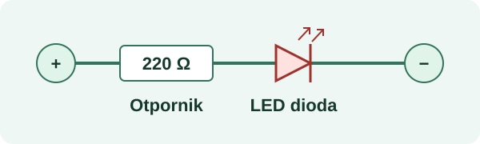

RADNI LIST · PROJEKT 01
LED signalizacija
Pripremi dijelove i isplaniraj sljedeći probni spoj signalne lampice.
01 · Popis dijelova
Ogledni plan uključuje rezervne otpornike. Ovaj popis ne mijenja stanje zalihe.
| Komponenta | Potrebno | Na zalihi | Za nabavu |
|---|---|---|---|
| Otpornik 220 Ω | 3 | 12 | 0 |
| Crvena LED dioda | 1 | 4 | 0 |
02 · Provjera prije izrade
Označi dovršene korake. Odabiri se ne spremaju u Evidento.
03 · Skica spoja

Kad završiš probu, zabilježi stvarnu potrošnju u zalihama.